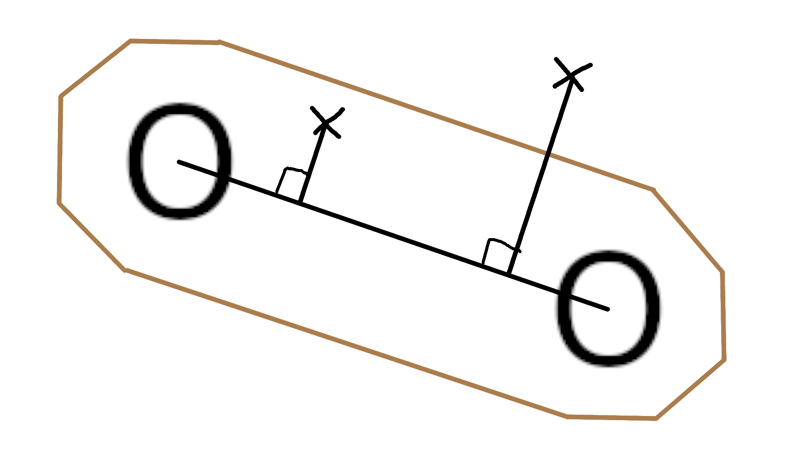

Soutenance 2 groupe 8
BOISSET Florian, ROUBILLE Mathis et THOUMIN Maxime
Introduction
1er juillet 2023 - 7 juillet 2023
Objectifs :
- Jeu vidéo.
- Intelligence Artificielle.
Lundi
- Reprise de la base du jeu de la semaine 1

- Modification de la génération du terrain.
- Modification de la gestion des collisions avec les astéroïdes.
Utilisation du projeté orthogonal.
- Ajout de deux trous noirs et de leur attraction.
Déplacements aléatoires.
Quand la distance joueur-trou noir diminue, l'attraction augmente.

Mardi
- Début IA
Mise en place du système de règles :
o Entrées :
[ Direction de la planète la plus proche, -> NO, NE, SE, SO, -1
Direction du mur le plus proche, -> NO, NE, SE, SO, 0, -1
Est-ce qu’il y a un mur entre le joueur et la planète ?, -> Oui, Non, -1
Direction du trou noir le plus proche, -> NO, NE, SE, SO, -1
Distance du trou noir le plus proche ] -> Proche, Moyen, Loin, -1

o Sorties :
[ Direction verticale, -> N, 0, S, -1
Direction horizontale ]-> O, 0, E, -1
o Priorité :
De 1 à 6
Algorithme de recherche locale :

- Optimisation du moteur de jeu
o Problème :
Exécution plutôt lente qui ralentit l'entraînement de l'IA.
o Solution :
Optimisation de la fonction de gestion des collisions.
Réduction du nombre d'appels de la fonction de gestion des collisions.
- Switch pour la partie graphique
Pour exécuter le programme plus rapidement et entraîner l'IA plus efficacement
Mercredi
- Résolution du bug du multi-threading
o Problème :
Beaucoup d'appels de la fonction rand().
Or, rand() fait appel à une variable globale et la modifie.
Donc les threads devaient attendre que les autres aient terminé d'utiliser la variable globale.
o Solution :
Création d'un tableau d'entiers choisis aléatoirement.
Les threads ont juste à lire dans le tableau, pas d'incrémentation de la variable.
- Algorithme génétique